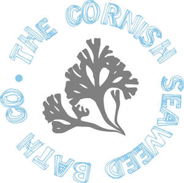

Trade Mark Journal No.2025/043 24 October 2025
UK00004239494 25 July 2025 (3,5,10,18,24)

- Class 3
- Hair care preparations and treatments; hair cleaning preparations; cosmetic hair care preparations; preparations for protecting hair from the sun; hair serums; shampoos; conditioners; hair oils; scalp oils; hair and scalp oils; hair masks; body cleaning and beauty care preparations; body washes; soaps; cosmetic bath salts; cosmetic bath salts containing seaweed; body scrubs; seaweed based bath and shower preparations (non-medicated); skin care preparations; skin care oils; face and body oils; essential oils; perfumery; moisturisers; hand lotions; body lotions; skin balms (non-medicated); eye lash serums; deodorants and antiperspirants; lip balms (non-medicated); non-medicated shampoos for pets; skincare products for pets (non-medicated); non-medicated ear cleaners, oils, washes and sprays for pets.
- Class 5
- Anti-bacterial soap; disinfectant hand washes; therapeutic preparations for the bath; mineral bath salts; medicated lip balms; anti-itch oils for pets; anti-itch preparations for pets; medicated grooming preparations for pets.
- Class 10
- Body massagers; scalp massagers; foot massagers; facial rollers; manual massage instruments.
- Class 18
- Bags; wash bags; make-up bags; soap bags; tote bags; beach bags; purses.
- Class 24
- Towels; bath towels, textile hair drying towels; beach towels; face cloths.
The Cornish Seaweed Bath Co. Limited
Representative: Daneel Williams LLP